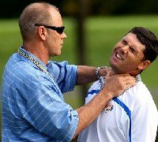

"Fourways Chiropractic For the Whole Family"
PGA golfers like Tiger Woods and Padraig Harrington have needed the services of a chiropractor in order for them to be able to keep playing a tournament and recover between events. However, it is not just PGA pros who can benefit from seeing chiropractors even everyday golfers can feel a difference from a chiropractic treatment.
Chiropractors aim to help correct little or even big golf injuries picked up and can provide ongoing performance maintenance care as golf is a sport of repetitive action. Just think of how many golf balls you can hit at a golf driving range alone, this is where repetitive strain injuries occur.
Golf involves players going from a stand still to very fast club head speeds in no time at all. This requires good posture balance and importantly the ability to rotate in you spine properly. When you start losing drive distance from the tee box or can’t get rid of a horrible hook shot maybe consider if you are losing spinal rotation.
The normal healthy spine should have three curves creating a gentle S-shape to it. When addressing a golf ball poor posture can easily create flattened or exaggerated curves in your spine that will play havoc with your swing. Having a chiropractor look at your spinal ranges of motion could help pick up restriction in your back joints. Releasing these restrictions through a chiropractic adjustment and specific muscle techniques and rehabilitation exercises could get you back in the golf day just in time.
Padraig Harrington the 2007/2008 Britsh Open champion has been using the services of his doctor of Chiropractic, Dr Dale Richardson, for over 12 years. Dr Richardson consults Padraig nearly on a daily basis whilst he is on tour winning tournaments on the PGA and European PGA tour. Dr Richardson and Padraig have at times created great interest whilst Padriag has required treatment on the golf course, which you can see from the photo.
So if you are an aspiring professional golfer, an existing pro-golfer or a weekend warrior golfer a chiropractor could be a vital link to keep you playing your game of golf. You may even be interested to know that you can use your chiropractor to hit the ball further. Chiropractors make use of the Foot Levelers technology for creating custom-made golf orthotics to wear in your golf shoes. These golf orthotics have been shown to allow PGA golfers to hit the golf ball further off the tee box. You can read more about Foot Levelers orthotics here.
You can email your golf injury question to one of the ChiroClinic chiropractors. We would love to try get you back playing on the golf course ASAP.